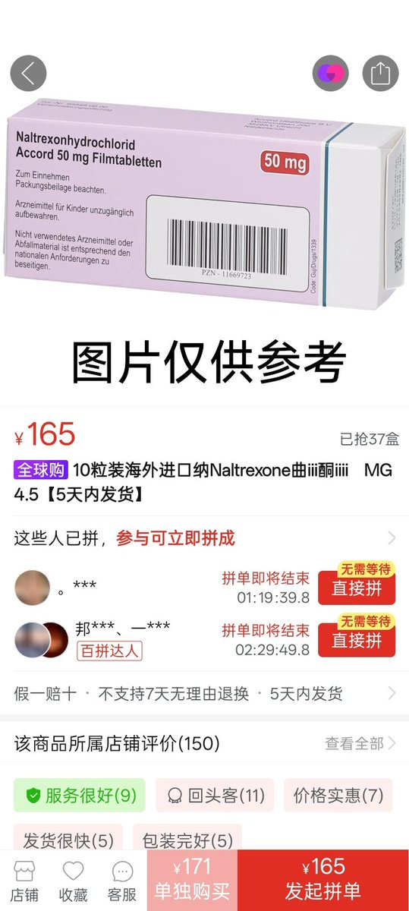

foes
@seeFvn
RT @Fox_Sakura233: 纳曲酮（Naltrexone） 是一种阿片受体拮抗剂（opioid antagonist），主用于治疗阿片类药物成瘾和酒精依赖
它能阻断阿片受体（μ、δ、κ受体），从而阻断阿片类药物的欣快感和镇静效果
对酒精依赖：可降低饮酒带来…

sakura👾
@Fox_Sakura233
纳曲酮（Naltrexone） 是一种阿片受体拮抗剂（opioid antagonist），主用于治疗阿片类药物成瘾和酒精依赖
它能阻断阿片受体（μ、δ、κ受体），从而阻断阿片类药物的欣快感和镇静效果
对酒精依赖：可降低饮酒带来的快感，减少饮酒量和复发风险（具体机制与阻断内源性阿片肽相关）。 https://t.co/9OVJCUZx3W